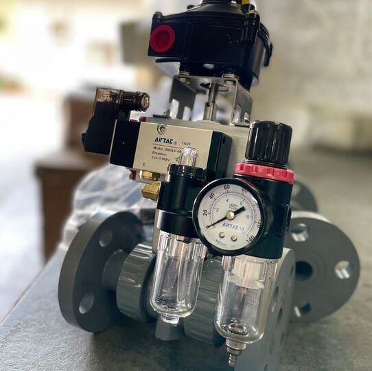

工業不斷進步，閥門相關產業當然也是日益競爭，常見的台牌、日牌、德國和義大利等，市面上還有許多來路不明的產品，甚至有客戶送來連商標LOGO都沒有的產品請我們檢修，因為他們找不到原廠處理產品後續問題，這些產品能提供好的品質嗎？
網路發達的現今，只需要運用電腦的基本操作以及基礎的買進賣出能力，任何人都可以開起店鋪做起生意，但是專業程度卻遠不及於真正深耕在此業的專家，他們提供的產品真的有保障嗎？

只賣產品不賣服務
開發新客戶的困難度比留住舊客戶多了五到七倍，有許多企業為了拓展客源而投入了許多的金錢與資源，但同時卻忽略了原有的客戶群，忽略了客戶使用產品後的需求。
售後服務就是協助客戶關於產品使用的疑問及後續維修等問題，然而沒有人會嫌商品價格低，價格卻跟品質、售後服務大有關係。
沒有任何一種產品是永遠不壞的，所以售後服務是一種必然的存在，也是專業廠家必備的條件之一，如果產品使用期間遇到任何問題，但供貨的廠商無法替你解決，甚至是沒有能力替你解決，最後也只能摸摸鼻子說服自己一分錢一分貨，下次不再跟這間廠商配合。
那何不一開始就選擇最專業的製造商呢？

寔黈擁有真正專業的技術、經驗及完善的售後服務，我們會用累積近四十年的專業與經驗幫助客戶解決問題。
我們非常專業於氣動閥門、氣動執行器及相關配件，不論是產品的提供、客製化的加工及組裝和產品維修等等，只要是氣動閥門相關，寔黈皆能給予最完善的服務，用高品質的產品及服務，與您在日益競爭的市場中攜手前進。